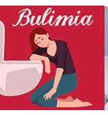

INGLES
InglesI.E.D.E.M. ASIGNATURA: INGLES DOCENTE: RAUL CAÑAS
INSTRUCCIONES GENERALES
1. DESCARGUE EL DOCUMENTO Y CONSERVELO EN FORMATO DE WORD PARA SOLUCIONARLO.
2. LEA ATENTAMENTE LAS INSTRUCCIONES DE CADA UNA DE LAS ACTIVIDADES PARA RESOLVER APROPIADAMENTE.
3. RESUELVA EL TALLER EN ESTE MISMO DOCUMENTO AGREGANDO LAS PAGINAS QUE SEAN NECESARIAS PARA SU SOLUCION.
4. AL TERMINAR DE RESOLVER, PUBLICARLO EN SU PAGINA WEB PARA SU RESPECTIVA EVALUACION.
5. FECHA FINAL DE ENTREGA: AGOSTO 4
ACTIVIDAD 1: LEE Y TRADUCE CADA UNO DE LOS PARRAFOS QUE SE DAN EN LA LECTURA A CONTINUACION.
Trastornos de la alimentación
Los trastornos alimentarios son tan comunes en Estados Unidos que 1 o 2 de cada 100 estudiantes sufrirán Luchar con uno. Los tipos más comunes de trastorno alimentario son la anorexia nerviosa y bulimia nerviosa (generalmente llamada simplemente “anorexia” y “bulimia”: pero otras enfermedades relacionadas con los alimentos trastornos, como los trastornos por atracón, los trastornos de la imagen corporal y las fobias a la comida, son apareciendo con más frecuencia que antes.
ANOREXIA
Las personas con anorexia tienen un miedo extremo a ganar peso y una visión distorsionada de su Tamaño y forma del cuerpo. Como resultado, no pueden mantener un peso corporal normal. Algunas personas con anorexia restringen su ingesta de alimentos mediante dietas o ejercicio excesivo. Casi no comen nada y la pequeña cantidad de comida que comen se convierte en una obsesión. Otras personas con trastornos alimentarios hacen algo llamado atracones y purgas, donde Comen mucha comida y luego intentan deshacerse de las calorías obligándose a vomitar. Usar laxantes o hacer ejercicio excesivo.
BULIMIA
La bulimia es similar a la anorexia. Con bulimia, una persona come compulsivamente (come demasiada comida) y luego intenta compensarlo de formas extremas, como vómitos forzados o exceso ejercicio, para prevenir el aumento de peso. Con el tiempo, estos pasos pueden resultar peligrosos. Ser diagnosticada con bulimia, una persona debe darse atracones y purgarse regularmente, al menos dos veces a la semana durante un par de meses. Las personas con bulimia comen una gran cantidad de comida (a menudo comida chatarra).comida) a la vez, generalmente en secreto. La persona normalmente se siente impotente para dejar de comer y sólo puede parar cuando esté demasiado lleno para comer más. Kidshealth.org (abreviado)
ACTIVIDAD 2: BUSCA UNA IMAGEN QUE PUEDA IDENTIFICAR CADA UNO DE LOS PARRAFOS DE LA LECTURA ANTERIOR Y AGREGALO EN LA SOLUCIÒN DEL TRABAJO PROPUESTO
Trastornos de la alimentación
Anorexia

Bulimia

ACTIVIDAD 3: RESUELVE EL CUESTIONARIO QUE SE DA A CONTINUACIÓN A PARTIR DE LA LECTURA.
A- Lee el texto y decide si estas oraciones son con verdadero (V) o falso (F). Corrige las falsas.
1. Un gran número de estudiantes estadounidenses sufrirán trastornos alimentarios. __V__
2. La anorexia y la bulimia son los únicos trastornos relacionados con la alimentación. _F____
3. A las anoréxicas les gusta su cuerpo. __F____
4. Algunas anoréxicas comen muy poco y hacen demasiado ejercicio. ____V__
5. Algunas bulímicas intentan perder calorías haciendo ejercicio con regularidad. __V____
B- Responde las siguientes preguntas con frases completas.
1. ¿Cuáles son los síntomas de la bulimia?
Síntomas de la bulimia
Repetir episodios de ingerir cantidades excesivas de alimentos en una única vez
Durante el atracón, la persona tendrá una pérdida de control, sin poder dejar de comer o sin ser capaz de controlarlo
Tras un atracón, forzar el vómito
Hacer ejercicio excesivo para no aumentar el peso
Utilizar laxantes, diuréticos después de comer
Ayunar
2. ¿Cuándo podemos decir que una persona sufre bulimia?
La presencia de atracones: conocidos como episodios de ingestas excesivas y rápidas de comida y que se encuentran asociadas a una sensación de falta de control.
Presencia de conductas compensatorias: conductas como el vómito inducido, el uso de laxantes y diuréticos, restricciones alimentarias o la hiperactividad física, que se realizan con el objetivo de intentar compensar los efectos de la sobre ingesta. (*La presencia de ambos ocurren de promedio al menos, una vez a la semana durante tres meses).
Autoimagen negativa: sentimientos de gran insatisfacción con la imagen corporal, distorsión del peso y el volumen del cuerpo, que hacen que se muestre una gran preocupación por el peso y figura.
3. ¿Por qué las bulímicas comen tanto?
Las personas con bulimia comen una cantidad mayor de comida de lo que comería la mayoría de las personas en una situación similar, en un breve período de tiempo (atracón). Entonces, para evitar subir de peso, hacen algo por eliminar la comida que ingirieron (se purgan), vomitar
ACTIVIDAD 4: COMPLETA EL SIGUIENTE CUADRO CON LA INFORMACIÒN QUE SE PIDE: ESCRIBE EN CADA CASO TRES SUGERENCIAS APLICANDO LAS EXPRESIONES: DEBE – NO DEBE / ¿QUÉ TAL…? / ¿POR QUÉ NO…? PARACA
EXPRESAR LA POSIBLE SOLUCIÒN A CADA UNA DE ESTAS SITUACIONES DE SALUD.
UTILIZA VOCABULARIO Y EXPRESIONES ESTUDIADAS Y TRABAJADAS EN CLASE